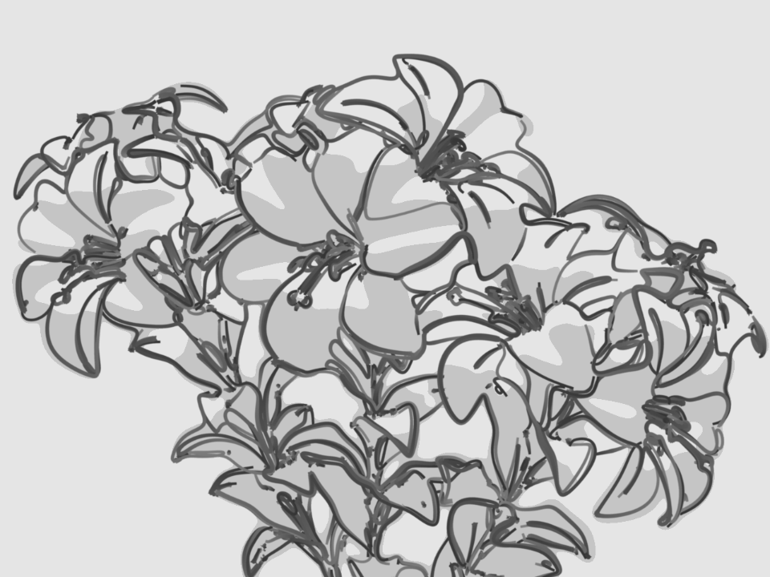

Python Scripting Mode¶
The Python Scripting mode offers full programmable line stylizes. In this control mode, all styling operations are written as Python scripts referred to as style modules in the Freestyle terminology. The input to a style module is a view map (i.e. a set of detected feature edges), and the output is a set of stylized strokes.
A style module is composed of successive calls of five basic operators: selection, chaining, splitting, sorting and stroke creation. The selection operator identifies a subset of input feature edges based on one or more user-defined selection conditions (predicates). The selected edges are processed with the chaining, splitting and sorting operators to build chains of feature edges. These operators are also controlled by user-supplied predicates and functions in order to determine how to transform the feature edges into chains. Finally, the chains are transformed into stylized strokes by the stroke creation operator, which takes a list of user-defined stroke shaders.
Python style modules are stored within blend-files as text data-blocks. External style module files first need to be loaded in the Text Editor. Then the select menu within an entry of the style module stack allows you to select a module from the list of loaded style modules.
A screen capture of a style module cartoon.py loaded in the Text Editor (left),
as well as Freestyle options in the Python Scripting mode in the View Layers buttons (right).
Freestyle for Blender comes with a number of Python style modules that can serve as a starting point of your own style module writing. See also the section of the Freestyle Python API in the Blender Python API reference manual for the full detail of style module constructs.

By T.K. using the Python Scripting mode (blend-file, CC0). |

By T.K. using the Python Scripting mode (blend-file, CC0). |
Writing Style Modules¶
A style module is a piece of code responsible for the stylization of Freestyle line drawing. The input of a style module is a set of feature edges called view map (ViewMap). The output is a set of stylized lines also referred to as strokes. A style module is structured as a pipeline of operations that allow for building strokes from the input edges within the view map.
There are five kinds of operations (listed with corresponding operator functions):
- Selection
Operators.select() - Chaining
Operators.chain(), Operators.bidirectional_chain() - Splitting
Operators.sequential_split(), Operators.recursive_split() - Sorting
Operators.sort() - Stroke creation
Operators.create()
The input view map is populated with a set of ViewEdge objects. The selection operation is used to pick up ViewEdges of interest to artists based on user-defined selection conditions (predicates). Chaining operations take the subset of ViewEdges and build Chains by concatenating ViewEdges according to user-defined predicates and functions. The Chains can be further refined by splitting them into smaller pieces (e.g. at points where edges make an acute turn) and selecting a fraction of them (e.g. to keep only those longer than a length threshold). The sorting operation is used to arrange the stacking order of chains to draw one line on top of another. The chains are finally transformed into stylized strokes by the stroke creation operation applying a series of stroke shaders to individual chains.
ViewEdges, Chains and Strokes are generically referred to as one-dimensional (1D) elements. A 1D element is a polyline that is a series of connected straight lines. Vertices of 1D elements are called 0D elements in general.
All the operators act on a set of active 1D elements. The initial active set is the set of ViewEdges in the input view map. The active set is updated by the operators.
Selection¶
The selection operator goes through every element of the active set and keeps only the ones
satisfying a certain predicate. The Operators.select() method takes as the argument a unary
predicate that works on any Interface1D that represents a 1D element. For example:
Operators.select(QuantitativeInvisibilityUP1D(0))
This selection operation uses the QuantitativeInvisibilityUP1D predicate to select only
the visible ViewEdge (more precisely, those whose quantitative invisibility is equal to 0).
The selection operator is intended to selectively apply the style to a fraction of the active 1D elements.
It is noted that QuantitativeInvisibilityUP1D is a class implementing the predicate that tests line visibility,
and the Operators.select() method takes an instance of the predicate class as argument.
The testing of the predicate for a given 1D element is actually done by calling the predicate instance,
that is, by invoking the __call__ method of the predicate class. In other words, the Operators.select()
method takes as argument a functor which in turn takes an Interface0D object as argument.
The Freestyle Python API employs functors extensively to implement predicates, as well as functions.
Chaining¶
The chaining operators act on the set of active ViewEdge objects and determine the topology
of the future strokes.
The idea is to implement an iterator to traverse the ViewMap graph by marching along ViewEdges.
The iterator defines a chaining rule that determines the next ViewEdge
to follow at a given vertex (see ViewEdgeIterator). Several such iterators are provided
as part of the Freestyle Python API (see ChainPredicateIterator and ChainSilhouetteIterator).
Custom iterators can be defined by inheriting the ViewEdgeIterator class.
The chaining operator also takes as argument a UnaryPredicate working on Interface1D as a stopping criteria.
The chaining stops when the iterator has reached a ViewEdge satisfying this
predicate during the march along the graph.
Chaining can be either unidirectional Operators.chain() or bidirectional Operators.bidirectional_chain().
In the latter case, the chaining will propagate in the two directions from the starting edge.
The following is a code example of bidirectional chaining:
Operators.bidirectional_chain(
ChainSilhouetteIterator(),
NotUP1D(QuantitativeInvisibilityUP1D(0)),
)
The chaining operator uses the ChainSilhouetteIterator as the chaining rule and stops chaining
as soon as the iterator has come to an invisible ViewEdge.
The chaining operators process the set of active ViewEdge objects in order.
The active ViewEdges can be previously sorted using the Operators.sort() method (see below).
It starts a chain with the first ViewEdge of the active set.
All ViewEdges that have already been involved in the chaining process are marked
(in the case of the example above, the time stamp of each ViewEdge is modified by default),
in order not to process the same ViewEdge twice.
Once the chaining reaches a ViewEdge that satisfies the stopping predicate, the chain is terminated.
Then a new chain is started from the first unmarked ViewEdge in the active set.
This operation is repeated until the last unmarked ViewEdge of the active set was processed.
At the end of the chaining operation,
the active set is set to the Chains that have just been constructed.
Splitting¶
The splitting operation is used to refine the topology of each Chain.
Splitting is performed either sequentially or recursively. Sequential splitting
Operators.sequentialSplit() in its basic form,
parses the Chain at a given arbitrary resolution and evaluates a unary predicate
(working on 0D elements) at each point along the Chain.
Every time the predicate is satisfied, the chain is split into two chains.
At the end of the sequential split operation,
the active set of chains is set to the new chains.
Operators.sequentialSplit(TrueUP0D(), 2)
In this example, the chain is split every 2 units.
A more elaborated version uses two predicates instead of one: One to determine the starting
point of the new chain and the other to determine its ending point. This second version can
lead to a set of Chains that are disjoint or that overlap if the two predicates are different
(see Operators.sequentialSplit() for more details).
Recursive splitting Operators.recursiveSplit() evaluates a function
on the 0D elements along the Chain at a given resolution and
find the point that gives the maximum value for the function.
The Chain is then split into two at that point.
This process is recursively repeated on each of the two new Chains,
until the input Chain satisfies a user-specified stopping condition.
func = Curvature2DAngleF0D()
Operators.recursive_split(func, NotUP1D(HigherLengthUP1D(5)), 5)
In the code example above, the Chains are recursively split at points of the highest 2D curvature. The curvature is evaluated at points along the Chain at a resolution of 5 units. Chains shorter than 5 units will not be split anymore.
Sorting¶
The sorting operator Operators.sort() arranges the stacking order of active 1D elements.
It takes as argument a binary predicate used as a “smaller than” operator to order two 1D elements.
Operators.sort(Length2DBP1D())
In this code example, the sorting uses the Length2DBP1D binary predicate to sort
the Interface1D objects in the ascending order in terms of 2D length.
The sorting is particularly useful when combined with causal density. Indeed, the causal density evaluates the density of the resulting image as it is modified. If we wish to use such a tool to decide to remove strokes whenever the local density is too high, it is important to control the order in which the strokes are drawn. In this case, we would use the sorting operator to ensure that the most “important” lines are drawn first.
Stroke Creation¶
Finally, the stroke creation operator Operators.create()
takes the active set of Chains as input and build Strokes. The operator takes two arguments.
The first is a unary predicate that works on Interface1D that is designed to make a last
selection on the set of chains.
A Chain that does not satisfy the condition will not lead to a Stroke.
The second input is a list of shaders that will be responsible for the shading of each built stroke.
shaders_list = [
SamplingShader(5.0),
ConstantThicknessShader(2),
ConstantColorShader(0.2,0.2,0.2,1),
]
Operators.create(DensityUP1D(8,0.1, IntegrationType.MEAN), shaders_list)
In this example,
the DensityUP1D predicate is used to remove all Chains whose mean density is higher than 0.1.
Each chain is transformed into a stroke by resampling it so as to have a point every 5 units
and assigning to it a constant thickness of 2 units and a dark gray constant color.
User Control on the Pipeline Definition¶
Style module writing offers different types of user control, even though individual style modules have a fixed pipeline structure. One is the sequencing of different pipeline control structures, and another is through the definition of functor objects that are passed as argument all along the pipeline.
Different pipeline control structures can be defined by sequencing the selection, chaining, splitting, and sorting operations. The stroke creation is always the last operation that concludes a style module.
Predicates, functions, chaining iterators, and stroke shaders can be defined by inheriting base classes and overriding appropriate methods. See the reference manual entries of the following base classes for more information on the user-scriptable constructs.
See also
Predicates, functions, chaining iterators, and stroke shaders can be defined by inheriting
base classes and overriding appropriate methods. See Freestyle python module for more information on the user-scriptable constructs.